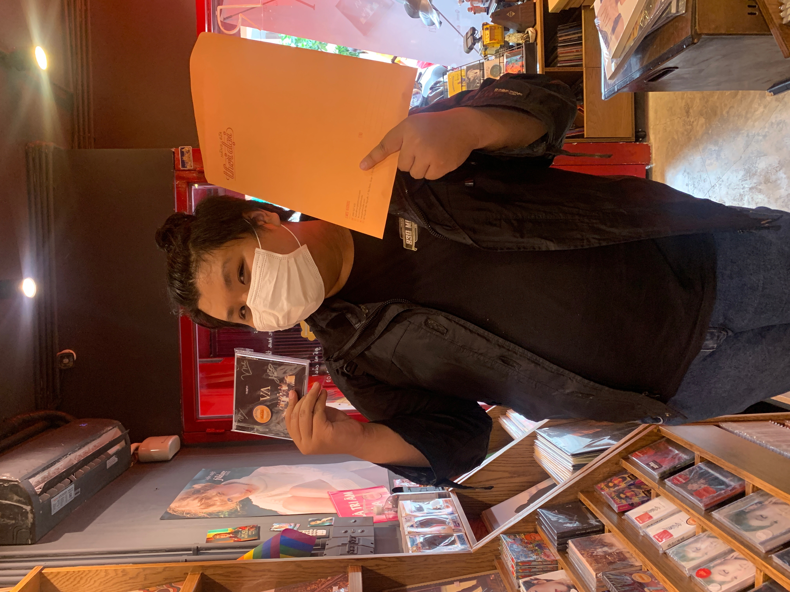

Pham Vo Dong
Pham Vo Dong

- Student number: s3891968
- Email: s381968@rmit.edu.vn
- I am now doing a Bachelor of Information Technology at RMIT, and I like playing basketball and shooting photography in my leisure time. And the main reason I chose to spend my time in IT is that in today's world, information technology plays such an important role in our lives, affecting our daily activities in such a way that no one can ignore it. Information technology advancements, in my opinion, make a person's life better and more convenient. IT, for example, makes it simpler for individuals to weather the COVID-19 storm since they can do things online that doesn't require face-to-face interaction, such as shopping, learning, and working from home. I've had a great interest in technology since I was a youngster. When my family received their first computer, it opened up a whole new world for me, and I was able to enhance my technological expertise. It aroused my curiosity as a consequence. I competed in various tournaments and built some minor projects, such as autonomous watering systems, light bulbs, and balancing vehicles, through my high school robotics club. In addition, I've worked as a graphic designer since high school and am proficient in Python and HTML. As a result, I anticipate learning the skills required to manage an IT project and bringing my brilliant concept to life after completing my studies.
- My ideal job is Ai engineer. The link: https://www.vietnamworks.com/ai-engineerartificial-intelligence-1-143412jv/?source=searchResults&searchType=2&placement=1434130&sortBy=date&sourc e=searchResults&searchType=2&placement=1431510&sortBy=date&utm_source=vn w_homepage&utm_medium=HotCategories&ignoreLocation=true (Vietnam works,2021)
- This job appeals to me because I can work closely with a team of technicians in Artificial Intelligence (AI) algorithms. I also have a chance to communicate directly with global customers to provide solutions, design, implementation, and validate the proposed AI data.
- These tests show that I am an extrovert person, and I could become a potential leader. I will take on well my position as a header of the team with my helpful skill such as idealistic, charismatic, creative, social which leads me and my teammate to reach success. Moreover, I create a better environment that is the most comfortable to make them feel not just motivated but also inspired. Every people in my team will help a good chance to perform their strongest skill to join hand my the project successful.
 Information
Information
 About Me
About Me
 Ideal jobs
Ideal jobs
 Personal profile
Personal profile
Some test show my personality
16personalities, 2021Education Planner.org, 2021
 Creative Types by Adobe Create, 2021
Creative Types by Adobe Create, 2021